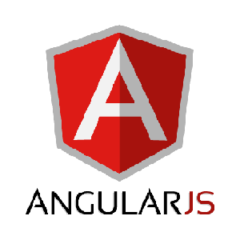

JUAN DIEGO
FERNÁNDEZ DÉNIZ
Desarrollador de Software Junior
SOBRE MÍ
PROYECTOS
CONTACTO
SOBRE MÍ
PROYECTOS
CONTACTO
Tengo 22 años, me gustan los juegos de mesa, de cartas y jugar a videojuegos con mis amigos, además, disfruto viendo casi cualquier tipo de deporte.
Como virtud y defecto, al mismo tiempo, me gusta analizar hasta lo más insignificante y cuanto más aumenta mi experiencia, más mejora mi habilidad de adaptación.
Soy una persona abierta, trabajo bien en equipo, tengo sentido de la responsabilidad y me encanta la sensación del trabajo bien hecho. Por ello, busco la manera de ampliar mis conocimientos y de conocer a otros profesionales los que poder solucionar los problemas que vengan.
Bachillerato de Ciencias Tecnológicas
(2010-2013)
[I.E.S. Jinámar]
Ciclo Superior de Desarrollo de Aplicaciones Web
(2014-2016)
[I.E.S. El Rincón]
Ciclo Superior de Desarrollo de Aplicaciones Multiplataformas
(2016-2017)
[I.E.S. El Rincón]
Estuve en Abaco System place Carrizal, Ingenio. Trabajé junto a un programador autónomo que conocía al jefe para cambiar la página web de la empresa. Principalmente hice front-end con .Net (C#) a partir de una plantilla que trajo el programador mientras él se encargaba del back-end. Al finalizar mi periodo de prácticas quedaban cosas por hacer pero nunca se acabaron porque el jefe decidió conservar la página que tenía.
Estuve en Mundiaudit SL place Tafira Alta. El jefe de proyectos era el programador que conocí en las prácticas anteriores y en esos 2 meses vi la metodología de trabajo que llevaban y la importancia del análisis antes de escribir código. Mejoré mucho la organización, el análisis y la resolución de problemas, así como la programación a través de .Net (C#) con máquinas de estado, seguridad, encriptación y demás conceptos en programación back-end.
Quiero aprender nuevas tecnologías para dar soluciones más eficientes.
